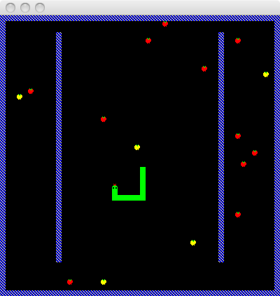
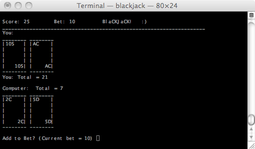

The following are a few projects I've done in my spare time. The projects are presented by order of date, with the most recent ones first.
The idea is based on the app I created for Android and iPhone (see below), but is rewritten in C for Linux (using the X11 API), and offers a standalone app as well as a screensaver (integrated with xscreensaver).
Since 2009, I have been interested in mobile development. I have developed a few applications for Android, and ported one of them to iPhone. I have only very briefly explored Blackberry, but would be interested in learning more about BlackBerry or Windows mobile development as well.

This is a widget which displays the current date and time in the French Revolutionary calendar. There are a couple of options: to show just the date or both the date and time, and to choose the method by which the date is calculated (the French revolutionaries never did agree on a method before they decided to return the Gregorian system).
The scroll color changes each month.
This is a collection of Android applications which allow the user to find his location on a map without having an internet connection. I have created several versions of the application with various types of maps in the Paris area.
At the time I created this Android application, I did not have a data/internet cell phone plan. I thought it both be useful to have a GPS, and interesting to see my location on historical maps.
The different maps available are :
This is a geography game for Android which presents a map to the user, and a location to identify. The user has 90 seconds to identify as many locations as possible. The user's score is based on the response time as well as accuracy.
Several maps are available, such as the world, each of the continents, France, and some specific information maps such as dialing codes of countries.
The user may choose from several levels of difficulty, from Easy (the city and country are both provided) to Extreme (the user must enter the longitude and latitude coordinates manually instead of touching the map).
Implementation detail: The main logic for the game was implemented initially in Java Swing. I then packaged the pure Java code (any code not specifically related to Swing) into a library and extended it for the Android app.
AKA "Nounours", this is an Android application featuring a teddy bear. I took about 30 photographs of the bear from different angles, and used these photos to create a model of the bear. This application served as a learning project for me, to become familiar with various features of Android. The application has the following functionalities:
The app exists as a standard app which has multiple themes, as well as multiple Live Wallpaper apps (each with one theme).
I have ported Noonoors to the iPhone, but I have not yet placed it on the App Store or on Cydia. As of today, the iPhone version exists only on my phone :)
As with GeoFun!, I initially developed Noonoors in Java Swing, and packaging it into a library, was able to separate the Android-specific code from the application logic. This allowed me to easily port the application as a screensaver for Windows.
Here are a couple of programs I did eons ago :)
I spent a few weekends in 2001 developing this snake game. At the time it was developed on Linux, using QT for the graphics. I recently updated it to work on MacOS, with the latest version of QT.
You can download the source code here.

I would consider this my first program useful or entertaining enough to share :) At the time I wrote this, I was not yet a computer science student, but I was taking one course in C programming. The program was written in C, on VMS. It required no modifications to get it to compile and run on Mac OS X fifteen years later.
You can download the source code here.
Part of the logic for shuffling the cards came from the textbook in the C class I was taking, I believe "C: how to program" by Deitel & Deitel, 1994.
